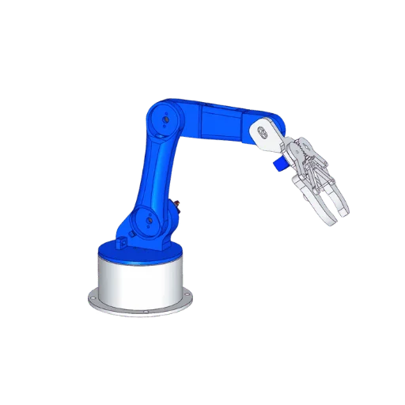

Robô Cilíndrico

O robô cilíndrico é um manipulador industrial cuja área de trabalho possui formato cilíndrico. Seus movimentos combinam deslocamentos lineares e movimentos de rotação, permitindo alcançar diferentes posições com boa precisão. Esse tipo de robô foi bastante utilizado nas primeiras gerações da robótica industrial e ainda é empregado em aplicações específicas.
Princípio de Funcionamento
O robô cilíndrico realiza seus movimentos por meio de uma base giratória, um eixo vertical e um braço que se desloca horizontalmente. Essa combinação permite alcançar pontos distribuídos em um volume cilíndrico, sendo controlado por motores elétricos e sistemas eletrônicos de automação.
Características Técnicas
- Movimentos lineares e rotacionais.
- Área de trabalho em formato cilíndrico.
- Boa precisão e repetibilidade.
- Estrutura simples e robusta.
- Fácil manutenção.
- Boa capacidade para movimentação de cargas.
Aplicações Industriais
- Carga e descarga de máquinas.
- Movimentação de materiais.
- Linhas de montagem.
- Operações de usinagem.
- Manipulação de peças.
- Armazenamento automatizado.
Integração com Automação e IoT
O robô cilíndrico pode ser integrado a CLPs, sensores industriais, sistemas supervisórios e plataformas de Internet das Coisas (IoT), permitindo monitoramento em tempo real, coleta de dados operacionais, manutenção preditiva e maior eficiência dos processos industriais.
Modelos Comerciais
| Fabricante | Modelo |
|---|---|
| Yamaha | SR Series |
| Güdel | Cylindrical Robot |
| Siasun | Cylindrical Manipulator |
Imagens de Modelos Comerciais

SR Series
Yamaha

Cylindrical Robot
Güdel

Cylindrical Manipulator
Siasun